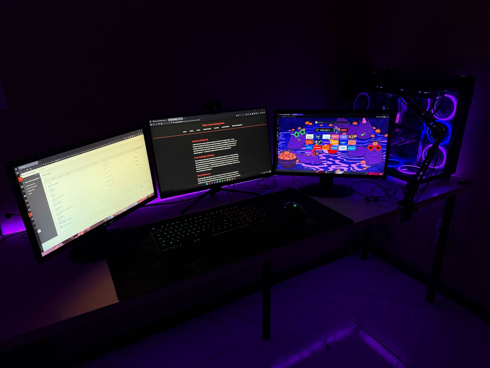

Where It All Started
I didn’t fall in love with computers because of school or programming — it was because of gaming. Playing on consoles growing up was a big part of my life. I was always excited by how games worked, how smooth the graphics looked, and how fun it felt to explore new worlds. That’s what first pulled me in. I didn’t just want to play the games — I wanted to understand the machines behind them.
From Playing to Building
That curiosity eventually turned into something more hands-on. I started learning about computer parts and building systems from scratch. I’ve even built full setups for friends and my own rig, picking out every part from the CPU to the fans. It’s not just about performance — I enjoy putting it all together, making it look clean, and seeing it work perfectly. There’s something satisfying about building a machine that you understand completely.
Why I Still Love It
Gaming is still a big reason I love computers, but they also make everyday life better. Whether I’m doing research, watching content, or helping someone fix a problem, computers just make things easier. They entertain, they connect people, and they open up opportunities. That’s why I’ve stuck with them — not just for the fun, but because I see how useful and powerful they really are.
